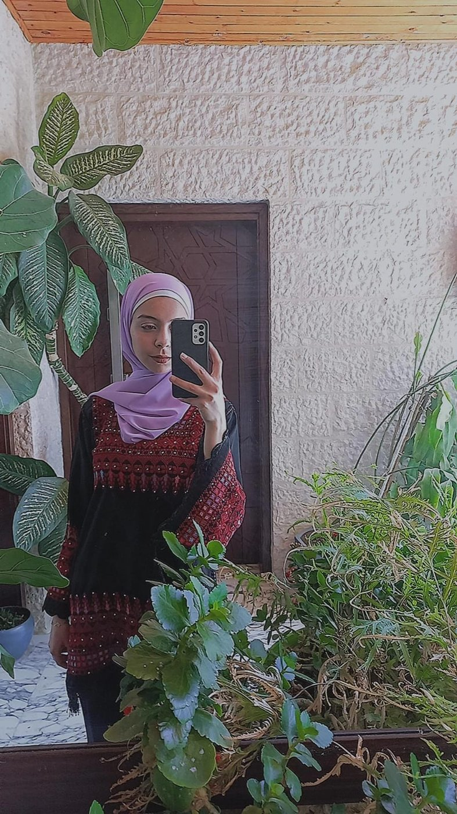

✦ The Artist
I'm a versatile artist and game developer with experience in game development, animation, concept art, graphic design, handcrafted art, and interactive media.
I enjoy combining traditional craftsmanship with digital techniques to create engaging visual experiences. Whether I'm developing a game, illustrating characters, animating a scene, or crafting handmade pieces, I love exploring different creative mediums and bringing ideas to life.